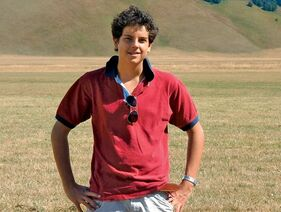
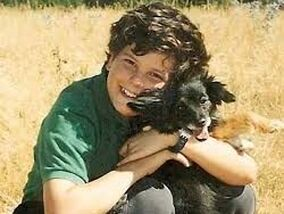
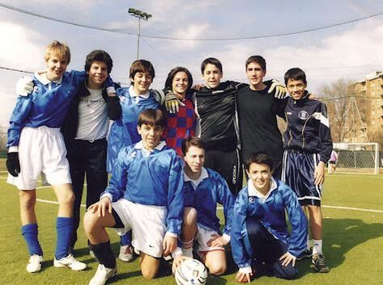
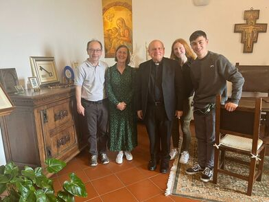
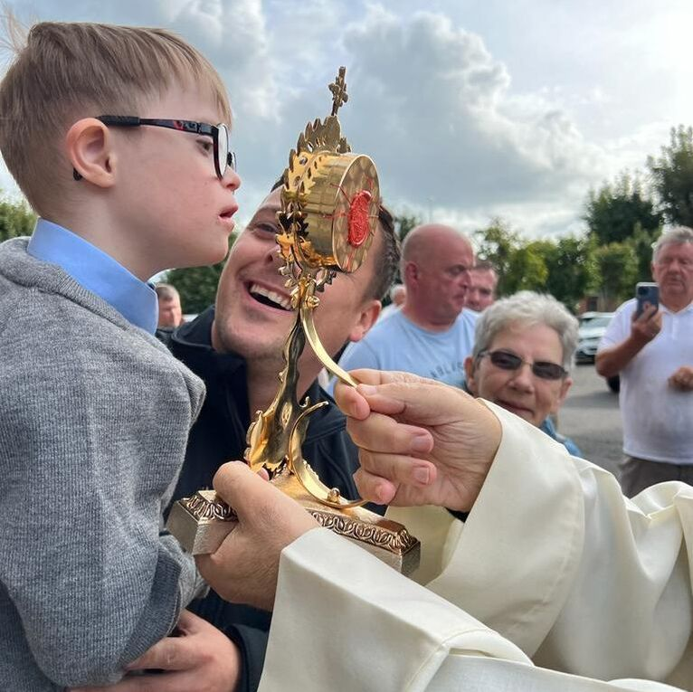
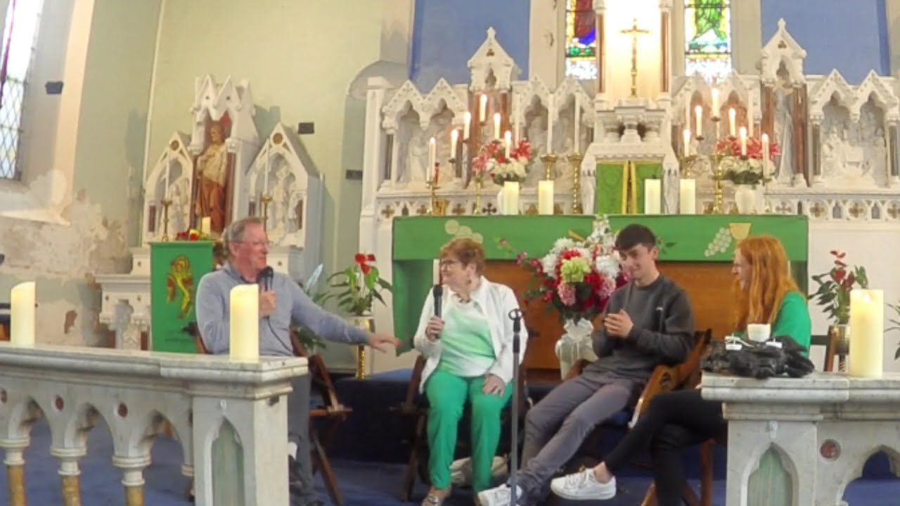
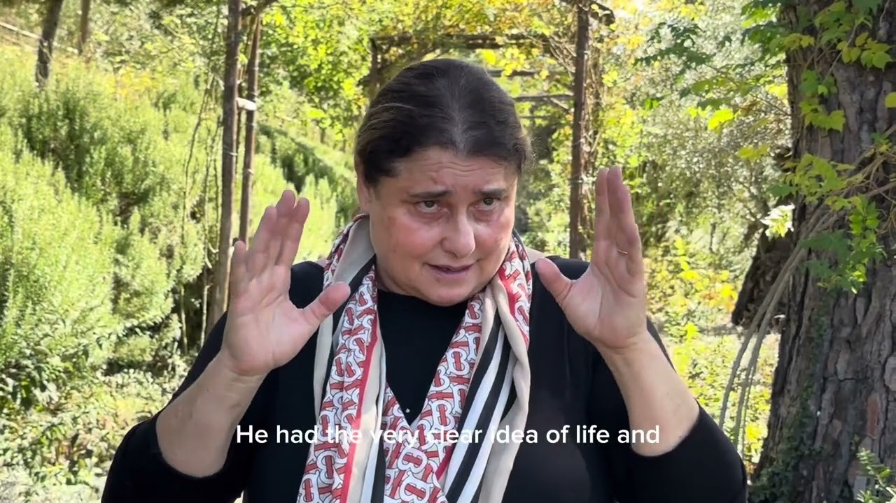
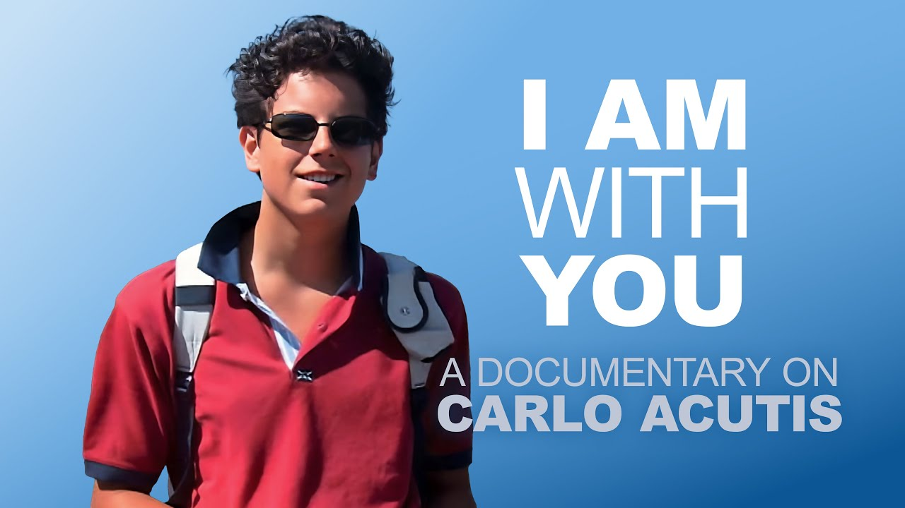

01
1991Born in London, the third of May
To Antonia and Andrea Acutis. He moved to Italy shortly after his birth and grew up in Milan.
London
3 May 1991
Saint Carlo Acutis · Ireland
24 / 24
Carlo Acutis Ireland
National Representation
Assisi → Ireland
Est. 2023
He was an ordinary boy from Milan. He loved football and playing music, and limited himself to one hour of video games a week because he thought they were addictive. He helped the bullied, the disabled, the homeless, the migrants. He believed the Eucharist was his highway to heaven. He died at fifteen.
Since 2023 his primary relic has travelled from Assisi to parishes across Ireland — and thousands have gathered to meet him.

01
To Antonia and Andrea Acutis. He moved to Italy shortly after his birth and grew up in Milan.
London
3 May 1991
02
His parents were wealthy business people who owned an insurance company. They were not religious. He asked them questions they couldn’t answer, and asked to be brought into churches to say hello to Jesus and Mary. Slowly, he brought them back to their faith.
Plate 01

Milan
Undated
03
He limited himself, because he felt they were so addictive. His friends describe a normal boy who wasn’t perfect, but who stood out for helping the bullied, the disabled, the homeless, the migrants.
Plate 02

Milan
Undated
04
Everyone is born as an original but many die as photocopies.
Carlo Acutis
05
He couldn’t understand why so many people would attend pop concerts but then never go to churches to see the creator of the universe. So he catalogued the miracles himself, and put them online.
Plate 03
Milan
Undated
06
He always believed he would die young, and tried to live life to the full and not waste it. At fifteen he fell ill with galloping leukemia and died within the week.
Monza
12 October 2006
07
There are others who suffer more than me.
Carlo Acutis, to his doctors
08
Assisi
10 October 2020
09
Plate 04
St Peter’s, Rome
7 September 2025
10
On a day trip from Rome in January. She had not heard of the young saint before the trip, and was captivated by him resting in the tomb — determined to find out more.
Assisi
January 2023
11
In collaboration with Archbishop Eamon Martin and Archbishop Domenico Sorrentino in Assisi, Brenda set off with a mission: to bring the primary relic of Carlo Acutis to every diocese on the island of Ireland.
Ireland
2023
12
Inspired by two young Italian Capuchin friars who had been studying in Ireland. Like Brenda, they arrived knowing nothing about Carlo Acutis.
Assisi
October 2023
13
A month after Assisi, the two families met in Dublin while the primary relic was visiting the parish on Church Street. It wasn’t long before the Ong family joined the Carlo Acutis Ireland team.
Church Street, Dublin
November 2023
14
A second visit, to update Archbishop Domenico Sorrentino on the progress of Carlo Acutis Ireland.
Plate 05

Assisi
May 2024
15
Relic 01 · Primary relic
On loan from Assisi
16
In churches across Ireland, to learn more about Carlo Acutis and to be blessed by the relic.
Plate 06

Ireland
2024
17
Interactive workshops on Carlo, quiz events, an exhibition of Eucharistic miracles, and Q&A sessions.
Plate 07

Ardfinnan, Co. Tipperary
Undated
18
Plate 08
Ireland
Undated
19
On September 25th we will visit the Achonry diocese.
Achonry
25 September
20

Film 01 · City Quay ChurchCity Quay, Dublin
Film
21

Film 02 · Saint Patrick’s ApostolateAssisi
Film
22

Film 03 · A documentary · EWTN—
Film
23
If everyone became like Carlo, the world would be a wonderful place.
Patrick Michael Quigley · Aged 17 · Fermanagh
24
Mary-Aoife and Séamus Ong, brother and sister, based in Dublin. Set up at the request of Brenda Cleary and Archbishop Domenico Sorrentino, to represent the young people of Ireland. Their dream is little Carlo hubs around the country.
Dublin
Ongoing
—
—
—
—
No records match that search.
{kind=link}
{kind=link}
{kind=link}
{kind=link}
{kind=link}
{kind=link}
{kind=link}